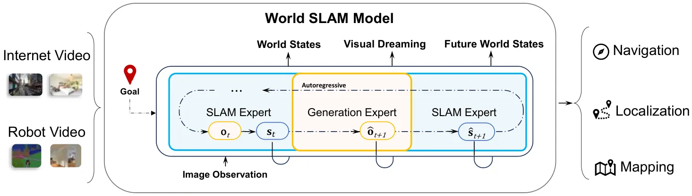
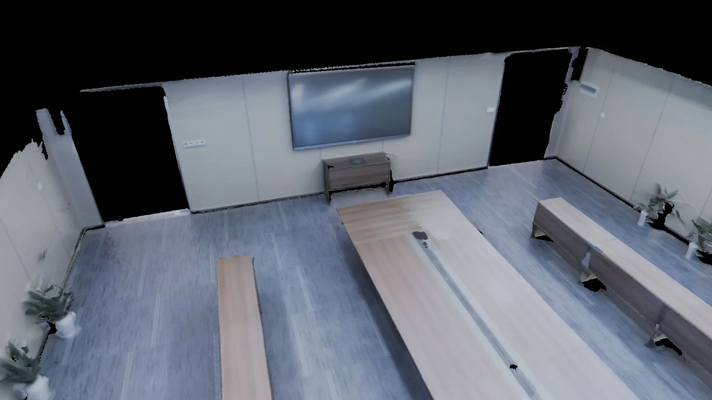
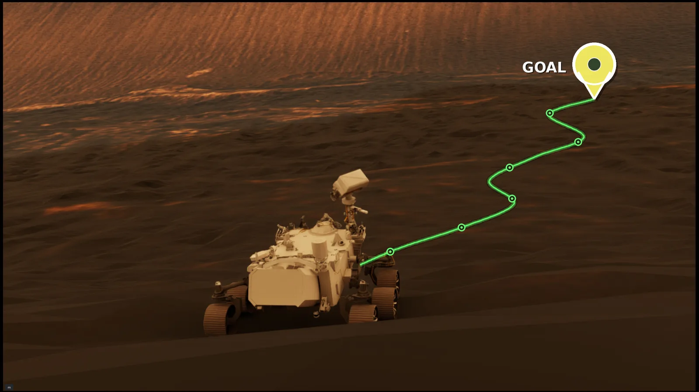
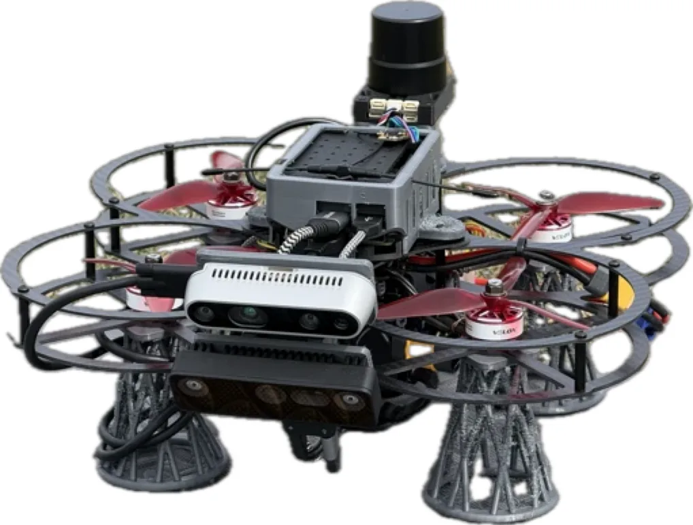
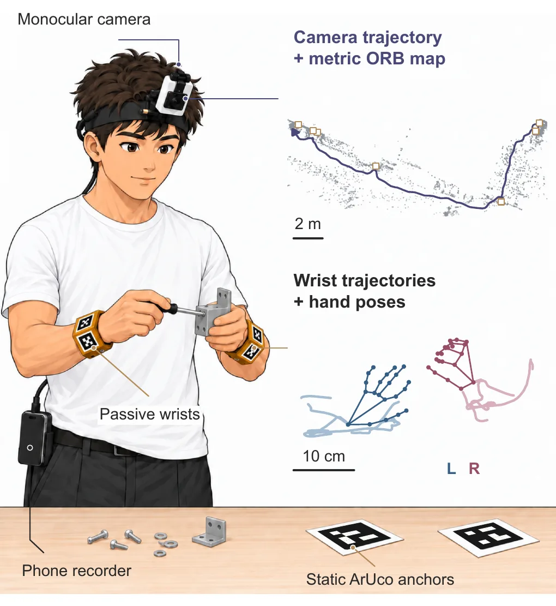
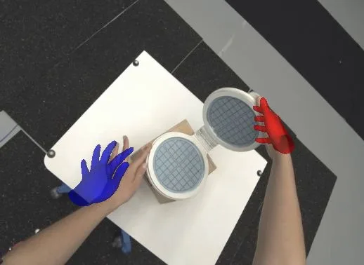

新论文 · 日期 2026-09-26 · score 16 · S层 · Learning + Geometric Optimization SLAM/VIO · cs.RO, cs.CV
内容级别：完整单篇海报
作者：Minghui Qin, Yijun Yuan, Weicheng Zheng, Kenan Li
评分 16/10
SLAM 机制内嵌MoE/Mixture-of-Transformers世界模型逆动力学局部后端重估goat 级 start-goal 导航
一句话工作总结：只给 RGB 与首帧系目标位置，用三专家 MoT 把“梦未来—从梦里复原米制位姿与深度—观测回灌后端纠偏”串成闭环；InternVLA-N1 Home SR 70.3、Commercial 73.9（均优于带深度的 LoGoPlanner），5% 留出集 ATE RMSE 0.021 m。
论文提出 World SLAM Model（WSM），把 SLAM 范式直接搬进下游导航：不再把 SLAM 当作只提供位姿、地图或 token 的上游模块，而是借用它的核心机制——带持久记忆的增量状态更新、以及对累积误差的后端纠偏——在交互过程中维持一致的世界状态。给定当前观测与导航目标，WSM 在同一个 Mixture-of-Transformers 里用生成专家想象未来视觉状态，再用 SLAM 专家作为逆动力学…
We introduce World SLAM Model (WSM), a unified framework that brings the SLAM paradigm directly into downstream navigation. Rather than treating SLAM merely as an upstream module that provides poses, maps or t…

新论文 · 日期 2026-09-29 · score 11 · S层 · Geometry Foundation Models / 3D Foundation Models · cs.CV
内容级别：完整单篇海报
作者：Kerui Ren, Tao Lu, Linning Xu, Changjian Jiang
评分 11/10
几何潜空间扩散3D 基础模型 DA3Wan2.2 VACE 外观先验持久空间记忆reflow 少步蒸馏世界一致性 NVS
一句话工作总结：把扩散生成搬到冻结 DA3 的几何潜空间、再用冻结 Wan2.2 VACE 的多层特征做 ControlNet 式外观注入，并用彩色点云记忆锚住多轮一致性；DL3DV PSNR 19.61 dB（GLD 17.38），Mip-NeRF360 ATE 0.071（GLD 0.105），6 个目标视图约 9 s。
从稀疏图像做新视角合成必须同时兼顾两件事：对已观测区域忠实重建、对未观测区域合理补全，并保持跨视角的世界一致性。基于几何的方法能保住观测到的结构，但补全未观测区域时常常无能为力；视频生成模型外观先验丰富，却在顺序生成时不断累积不一致。论文提出 GeoVerse：把生成过程放在预训练 3D 基础模型的几何潜空间里完成，同时注入视频生成模型的外观先验。具体做法是从 Wan2.2 VACE 抽取多层特征，经 Contro…
Novel view synthesis from sparse images must reconcile faithful reconstruction of observed regions with plausible completion of unseen content, while maintaining world consistency across viewpoints. Existing g…
新论文 · 日期 2026-09-28 · score 8 · A层 · Embodied Navigation / VLN / Spatial Reasoning · cs.RO
内容级别：半海报
作者：Xunyi Zhao, Jian Zhou, Sihao Lin, Gengze Zhou
评分 8/10
终身导航多轮 agentic 会话结构化恢复交接SLAM 位姿建图完成校验经验固化
一句话工作总结：免训练的具身导航 harness：每次尝试开新会话但继承外部记忆（SLAM 位姿建图 + 任务 journal + 房屋笔记），并做结构化恢复交接与两段式完成校验；GOAT-Bench 用 SLAM 估计位姿达到 83.7 s-SR / 36.9 e-SR，IR2R-CE 85.9 s-SR。
前沿模型现在可以靠多轮多模态推理与简单工具完成单次具身导航任务；但在连续任务之间，智能体还必须依赖一张持续演化的地图与早先的搜索记录，而这些记录可能不完整，甚至与新观测冲突。论文提出 NavHarness：一个免训练的具身 harness，把记忆处理变成导航循环的一部分。导航过程中，多轮 agentic 会话同时使用地图、任务记录与房屋知识，把它们与观测对照、并记录更正以指导动作；NavHarness 把这些经验跨…
Frontier models can now perform well on individual embodied navigation tasks through multi-round multimodal reasoning with simple tools. Across successive tasks, however, an agent must also rely on an evolving…

新论文 · 日期 2026-09-28 · score 12 · A-层 · Real-time / GPU Robotics Systems · cs.CV, cs.GR
内容级别：简报式摘要
作者：Yong Liu, Keyang Ye, Zhexi Peng, Ruixian Mei
评分 12/10
高斯 SLAMTSDF—高斯混合反射感知跟踪平面反射建模实时室内重建
一句话工作总结：用 TSDF—高斯混合表示显式分离漫反射与平面反射，三遍渲染 + 反射感知跟踪 + 几何/语义/时序平面识别，声称在室内反射场景下同时改善重建、跟踪与渲染并保持实时。
论文提出首个面向室内场景的实时反射感知高斯 SLAM 系统。它用反射感知的 TSDF—高斯混合表示把漫反射外观与反射分量显式分离：基础场景由 TSDF 体与一组基础高斯承载几何与漫反射外观，平面反射则由与检测到的反射平面关联的反射高斯组表示。渲染分三遍：先由 TSDF 射线投射得到表面颜色、深度、平面 ID 与反射掩码；再用深度剔除做顺序无关的基础高斯渲染并与 TSDF 输出合成基础图像；最后在平面 ID 图引导下…
We introduce the first real-time reflection-aware Gaussian SLAM system for indoor scenes. The system features a reflection-aware TSDF-Gaussian hybrid representation that explicitly separates diffuse scene appe…

新论文 · 日期 2026-09-28 · score 7 · A-层 · Real-time / GPU Robotics Systems · cs.RO
内容级别：简报式摘要
作者：Hoyun Kim, Beomsu Kim, Giseop Kim
评分 7/10
火星巡视器仿真Isaac SimROS2SLAM 基准VPR 基准视觉退化
一句话工作总结：ROS2 原生的开源火星车仿真平台（Isaac Sim + 毅力号级模型），可配岩石/撞击坑/光照/尘埃，发布 RGB、深度、点云、LiDAR、IMU、轮速与真值位姿，并给出 SLAM 与 VPR 基准。
未来火星任务需要巡视器在非结构化地形、光照变化、大气尘埃与受限通信条件下自主运行，仿真是在部署前研究这些条件最实用的手段，但现有与火星相关的资源分散在任务级仿真器、固定模拟数据集、任务专用环境与开放机器人接口之间。论文提出 MarsLab：一个开源、ROS2 原生的火星车仿真平台，面向自主性与导航算法开发。它把基于 HiRISE 的地形与程序化地形结合，提供可配置的岩石、撞击坑、太阳光照与大气尘埃设置，并在 NVI…
Future Mars missions will require rover autonomy that can operate across unstructured terrain, changing illumination, atmospheric dust, and limited communication. Simulation is a practical way to study these c…

新论文 · 日期 2026-09-28 · score 12 · B-层 · Traditional LiDAR/Visual SLAM · cs.RO
内容级别：简报式摘要
作者：Arman Kiani, Masoud Ataei, Elvis Gyaase, Jeffrey Eiyike
评分 12/10
VI-SLAM 数据集林下 UAV传感器对比504 次运行基准鲁棒性评测
一句话工作总结：林下 UAV 实飞 VI-SLAM 数据集与基准：12 次飞行、563.8 s / 1096.8 m，双相机（D435i 与 OAK-D Pro Wide）同步采集，7 套开源 VI-SLAM 共 504 次运行的结论是“传感器选择比算法差异更影响误差”。
无人机的视觉惯性 SLAM（VI-SLAM）在真实森林环境中很难评测：运动、光照变化、重复的植被纹理与振动都会影响估计。论文提出 ForVis：一个在林下 UAV 飞行场景中评测 VI-SLAM 的实飞数据集与基准。数据包含 12 次飞行，覆盖草甸、林冠之上与林冠之下三种条件，总计 563.8 s 飞行、1096.8 m 轨迹，用 Intel RealSense D435i 与 OAK-D Pro Wide 同步采…
Visual-inertial Simultaneous Localization and Mapping (VI-SLAM) for UAVs remains difficult to evaluate in real forest environments, where motion, illumination changes, repetitive vegetation, and vibration can…

新论文 · 日期 2026-09-28 · score 5 · B-层 · Traditional LiDAR/Visual SLAM · cs.RO
内容级别：简报式摘要
作者：Jie Xu, Kangjin Yu, Ziyi Jin, Beichen Wang
评分 5/10
单目米制重建标记 + 特征融合被动腕部星座地图合并离线追溯定位
一句话工作总结：单目米制第一视角采集系统：90 FPS 全局快门同时看被动腕部星座与稀疏工位锚点，MonoTag SLAM 融合标记角点与 ORB 并拒绝歧义平面位姿，Atlas 支持尺度重锚定、地图合并与追溯定位。
图像对齐的米制示教通常需要专用跟踪硬件与跨设备同步。论文提出 MonoEgo：用离线单目重建替代主动式腕部仪器。一台 90 FPS 全局快门相机在同一图像时钟下同时观测标定好的被动腕部星座、稀疏工位锚点与场景。MonoTag SLAM 把标记角点与 ORB 几何结合，并用视觉证据拒绝有歧义的平面标记位姿；其米制 Atlas 支持区间尺度重锚定、经过校验的地图合并与对早期帧的追溯定位。相机与腕部星座输出保留有效性与地…
Image-aligned metric demonstrations often require dedicated tracking hardware and synchronization across devices. We present MonoEgo, a capture system that replaces active wrist instrumentation with offline mo…

新论文 · 日期 2026-09-29 · score 3 · B-层 · Traditional LiDAR/Visual SLAM · cs.CV
内容级别：简报式摘要
作者：Kerui Ren, Kaiwen Song, Weiguang Zhao, Yuxi Wang
评分 3/10
流式前馈世界坐标手部运动MANO时空记忆替代 SLAM 级联
一句话工作总结：端到端流式前馈框架，从无标定第一视角视频联合估计 MANO 参数、相机轨迹与手部位置，用持久时空记忆替代“手部估计器 + SLAM”级联；ARCTIC PA-p 比 ViDiHand 低 21.4%，11.19 FPS。
从第一视角视频估计世界坐标系下的手部运动，需要同时恢复三维关节手形与相机自身运动。现有方法高度依赖“手部姿态估计器 + SLAM 系统”的级联，导致误差累积、流程复杂且算力开销大。为规避这些问题，论文提出 InfiniHand：一个端到端的流式前馈框架，直接从无标定的第一视角视频中联合估计 MANO 参数、相机轨迹与手部位置。它把持久时空记忆与以手为中心的视觉特征结合，在统一架构内显式耦合相机运动与局部手部几何。训…
World-space hand motion estimation from egocentric video requires recovering 3D articulated hand geometry while tracking camera egomotion. Existing approaches heavily rely on cascading independent hand pose es…